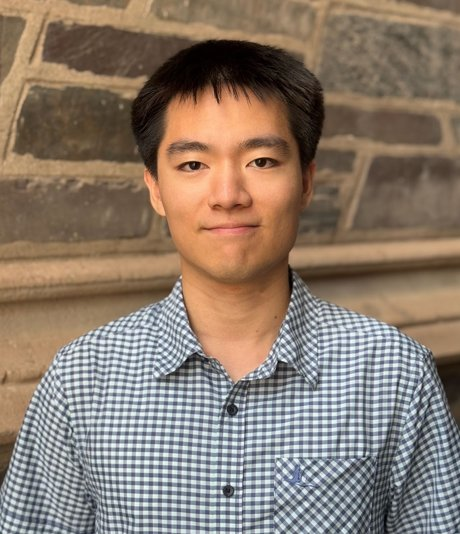

Kuan-Ju (Louis) Tseng
曾冠儒
I am a second-year Economics Ph.D. student at Princeton University.
My research interests include household finance, labor economics, and public economics.
I worked as a Research Professional with the Becker Friedman Institute at the University of Chicago and as a Research Assistant in the C2L2 Lab at National Taiwan University.
I received my B.A. in Economics with Honors from National Taiwan University in 2022.
My research and contacts can be found through the sidebar links.
Click here to view my CV.
